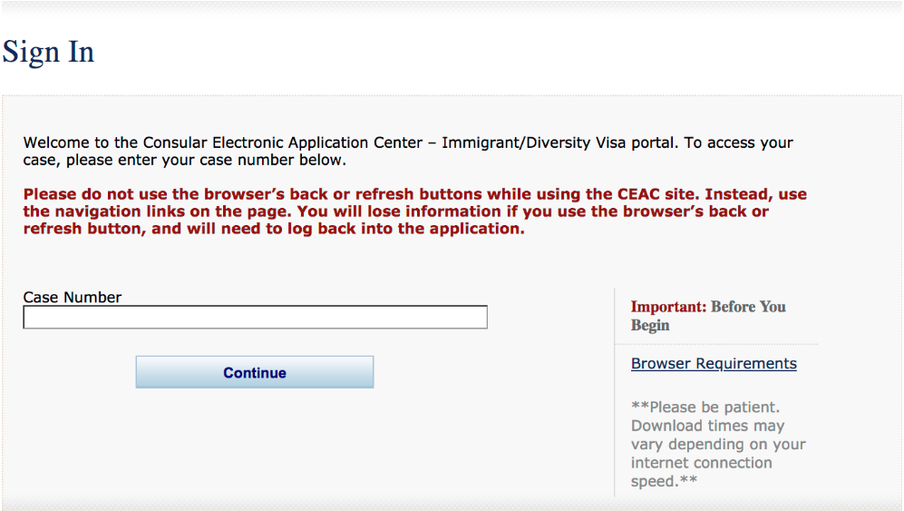
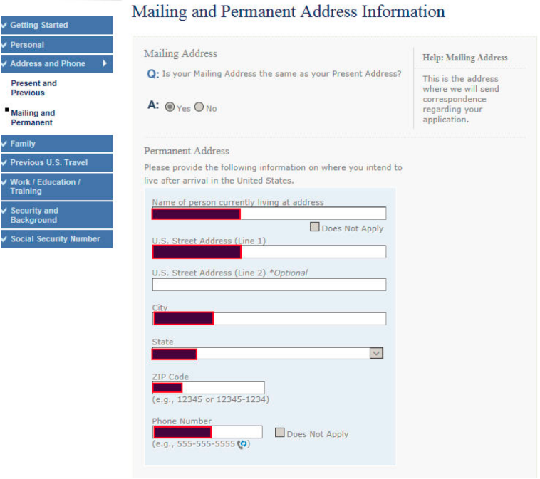
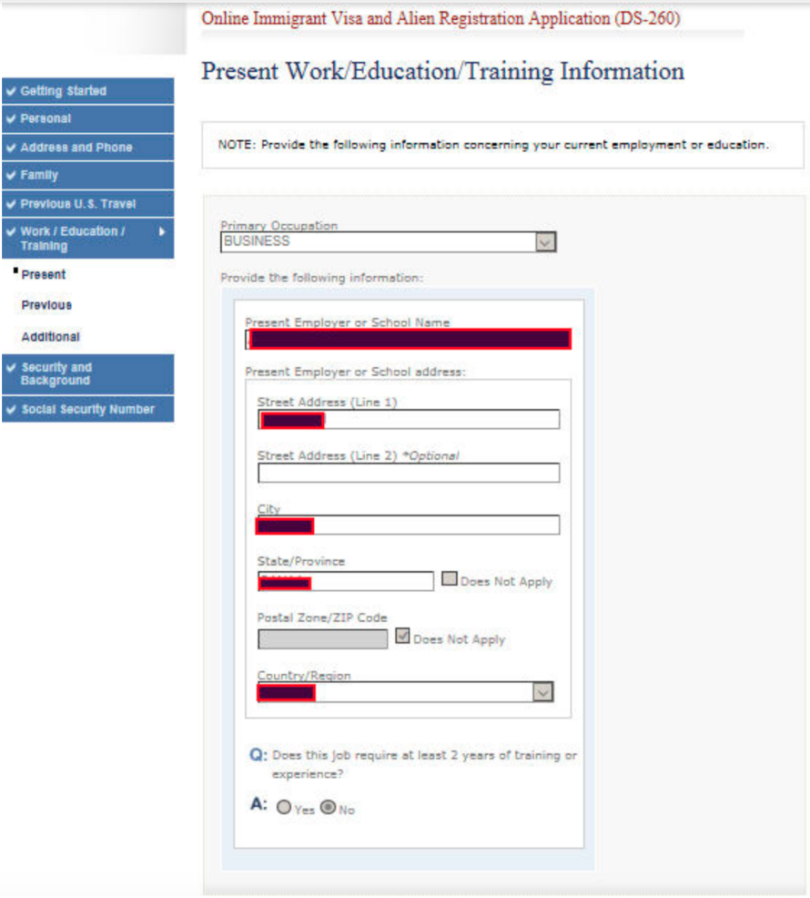

Pour ceux qui ont gagné la loterie DV de la carte verte, soumettre le
formulaire DS-260 est la première chose à faire après avoir gagné. Consultez nos instructions étape
par
étape pour remplir le formulaire afin d'accélérer le processus et d'éviter les erreurs.
Connectez-vous au centre de demande électronique consulaire
Accédez à
ceac.state.gov. Pour accéder
au formulaire, utilisez votre
numéro de dossier de loterie DV.
Saisissez ensuite votre nom de famille et le numéro de confirmation émis après votre inscription à la
loterie DV. Dans le dernier champ, sélectionnez «Candidat». Cliquez sur «Continuer».

Cliquez sur le champ «NON COMMENCÉ» et passez au formulaire.
Cochez la case à côté du champ «Je certifie avoir lu et compris ce qui précède. Je suis maintenant prêt
à
entamer le processus de demande de visa d'immigrant et d'enregistrement d'étranger ».
Si vous êtes inactif pendant plus de 20 minutes lors du remplissage du formulaire, votre session sera
terminée. Il est recommandé d'enregistrer chaque page après avoir entré les données. Dans ce cas, vous
pourrez toujours reprendre là où vous vous étiez arrêté et vous n'aurez pas à saisir à nouveau toutes
les
données. Il est également important de se préparer à l'avance et d'avoir toutes les informations à
portée de
main.
Choisissez la ville et le pays où vous souhaitez vous rendre pour un entretien de visa. Par défaut, le
système proposera l'ambassade américaine disponible la plus proche. Vous pouvez indiquer si cela vous
convient ou non.
Remplissez les informations personnelles en utilisant les détails de votre passeport. Votre passeport
doit
être valable 6 mois après la date d'entrée. S'il expire au cours du processus, entrez les données du
passeport actuel et mettez-le à jour plus tard après le remplacement. Dans ce cas, vous devez apporter
votre
ancien passeport et un nouveau à l'entrevue.
Entrez les coordonnées du demandeur. Il est important que l'adresse soit correctement écrite au format
américain, dans le bon ordre.
Une adresse aux États-Unis se compose généralement de trois lignes et doit être écrite de cette façon:
- 1ère ligne: prénom, nom
- 2e ligne: l'adresse elle-même. Écrivez d'abord le numéro de la maison, puis le nom de la rue,
puis
le numéro de l'appartement.
- 3ème ligne: nom de la ville, état et code postal.
Exemple d’adresse postale aux États-Unis: Christy Smith, 30 Asquam Rd, Ashland, NH, 03217. Remarque:
assurez-vous d’énumérer toutes les adresses où vous avez vécu physiquement depuis l’âge de 16 ans, pas
seulement les adresses officielles.
Fournissez des informations sur l'adresse où vous séjournerez pour la première fois après avoir déménagé
aux
États-Unis et à laquelle la carte verte doit être envoyée.

Que faites-vous si vous ne connaissez pas encore votre future adresse? Vous pouvez entrer l'adresse de
tout
ami ou parent qui vit aux États-Unis. Vous pouvez changer cette adresse pendant le processus - jusqu'au
jour
de votre première entrée aux États-Unis. Vous recevrez votre carte verte à votre adresse aux États-Unis
généralement dans les 3 à 4 semaines suivant votre arrivée, mais dans de rares cas, le processus peut
prendre jusqu'à plusieurs mois. Assurez-vous que l'adresse postale sera valide tout au long de cette
période.
Fournissez des informations sur votre famille: parents, conjoint, ex-conjoint, enfants. Lorsque vous
fournissez des informations sur votre mère, entrez son nom de jeune fille.
Ensuite, remplissez ces pages: Informations sur les voyages antérieurs aux États-Unis, Informations sur
le
travail / l'éducation / la formation actuelle, Informations supplémentaires sur le travail / l'éducation
/
la formation.

Passez à Sécurité et antécédents: Informations médicales et sanitaires. Lorsqu'on vous le demande sur
les
vaccinations, répondez «Non» si vous n'avez pas de carte de vaccination ou si vous en avez, mais pas
avec
toutes les vaccinations requises par la loi américaine. La liste des vaccinations nécessaires pour
obtenir
un visa d'immigrant américain est disponible sur
travel.state.gov. Les
commissions médicales vérifieront les informations de vaccination et feront les disparus.
Remplir la sécurité et les antécédents: informations de sécurité, sécurité et antécédents: violations de
la
loi sur l'immigration, sécurité et antécédents: informations diverses. Plus vous répondez «Non» - mieux
c'est.
La dernière page: Informations sur le numéro de sécurité sociale. Répondez «Oui» à la question
«Souhaitez-vous que la Social Security Administration délivre un numéro de sécurité sociale et une
carte?»
Cliquez sur «Next: Review». Revérifiez toutes les informations. Si vous trouvez une erreur, cliquez sur
«Modifier» en haut de la feuille de calcul et faites les corrections. Après avoir tout vérifié, appuyez
sur
«Suivant: signer et soumettre».
Indiquez votre numéro de dossier et votre numéro de passeport.
Cliquez sur «Signer et soumettre la demande». Si vous découvrez une erreur après la soumission, vous
pouvez
simplement informer l'agent consulaire lors de votre entretien de l'erreur et demander à ce qu'elle soit
corrigée.
Imprimez la confirmation et envoyez-la également à votre adresse e-mail.
Une fois que KCC aura reçu votre formulaire, il le «traitera». Il peut vous être demandé de soumettre
des
copies numérisées des pièces justificatives. Il est important d'envoyer toutes vos pièces justificatives
dans un seul colis. Votre entretien ne sera pas programmé avant ça!
Préparez-vous pour l'entrevue. Bonne chance!